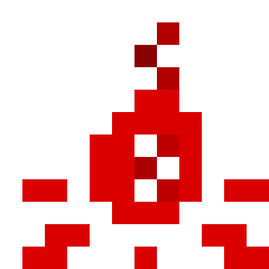
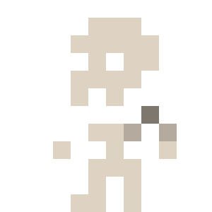
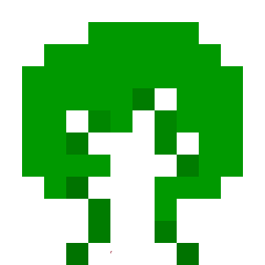
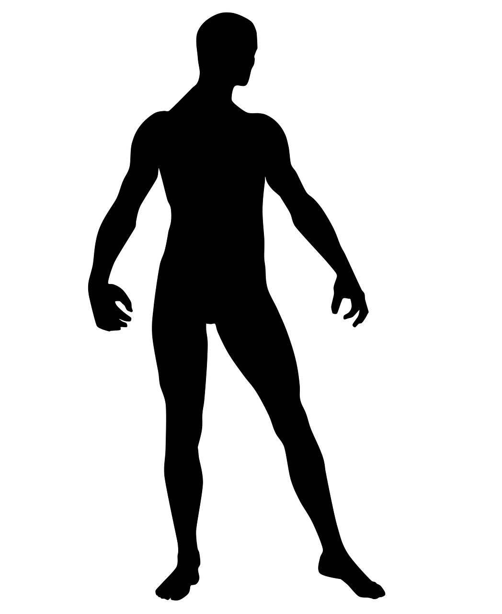

Despair Survival
   
New Game
Load Game
Options
Exit Game
Links:
Support game on Patreon 
Official itch.io page
Discord server
X
オプション
環境音の音量
🔇
🔊
プレイヤーの声の音量
🔇
🔊
戦闘BGMの音量
🔇
🔊
Text-to-Speech Volume
🔇
🔊
日本語
English
简体中文
GAME CLEAR
もう一度プレイ
マップ
ステータス
体力
空腹
渇き
睡眠
気力
体温
体臭
血液量
免疫系
痛み耐性
炭水化物
タンパク質
脂肪
ビタミン
攻撃力
防御力
重さ
容量
時間
N | W-+-E | S
歩行
走行
日記
所持品
装備品
クラフト
キャラクター情報
名前
:
年齢
:
歳
性別
:
職業
:
人種
:
特性
:
自ら命を絶つ
1ターン待機
研究
眠る
セーブ
オプション
UIレイアウトを保存
現在の場所
小屋の中の設備:
落ちているアイテム:
ミニマップ
カートに入れる
カートから外す
処置する
浄水器に注ぐ
肉を設置する
干し肉を回収する
生肉を干す
使う
研究をする
設置する
食べる
投げる
修理する
火をおこす
開ける
無理やり開ける
罠を外す
空にする
飲む
汲む
焼く
植える
沸かす
くべる
松明を作る
服を拭く
絞る
装備する
外す
装填する
装填解除
ナイフを装着
ナイフを外す
落とす
拾う
解体する
使う
漁る
解体する
閉じる
戦闘
あなた
体力
:
攻撃力
:
防御力
:
現在の姿勢
:
装備:
環境
:
大攻撃(近接)
大攻撃(近接)
大攻撃(遠距離)
受け流し
足払い
先進する
後進する
回避
狙いをつける
相手を探す
投げる
発砲
伏せる
立つ
前転
後転
全速力で前進
全速力で後進
逃げる
ゾンビ
体力
:
現在の姿勢
:
装備:
生存者との遭遇
交渉する
戦闘する
立ち去る
情報を聞く
交渉
あなたの提供アイテム
(
0
)
あなたの所持品
あなたの装備品
相手の提供アイテム
(
0
)
相手の所持品
相手の装備品
木箱
木箱の中身 (0/10)
あなたの所持品
ワークベンチ
研究ツリー
身体の状態

施設内を探索
建物の情報
ルート
セイフティ
スニーク
開発者パネル (`キーで表示/非表示)
アイテムを選択...
生成
救済の街
ヒントNPC
住居施設
商業施設
工業施設
小屋
トレーダーショップ
食中毒を発生
下痢を発生
発熱を発生
感染症を発生
かゆみを発生
出血を負う
打撲を負う
骨折を負う